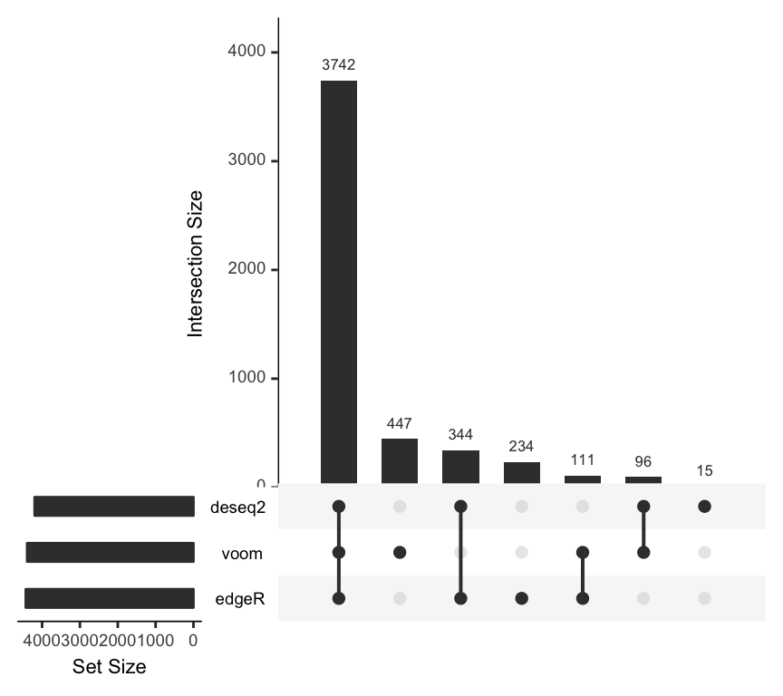
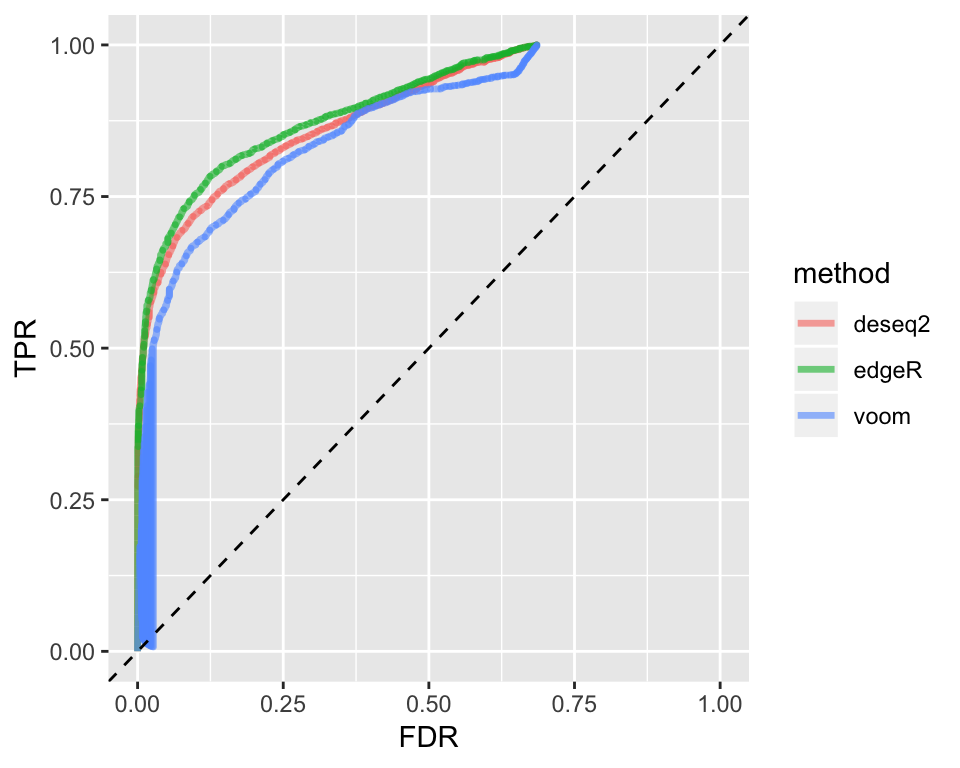

vignettes/SummarizedBenchmark-FullCaseStudy.Rmd
SummarizedBenchmark-FullCaseStudy.RmdAbstract
“While the foundations of theSummarizedBenchmark framework are introduced in the SummarizedBenchmark: Introduction vignette, this vignette provides a more detailed case study of performing a benchmarking comparison using the package. A more complex example of comparing methods for differential gene expression testing with RNA-seq data is presented, and used to motivate and demonstrate several core features of the SummarizedBenchmark approach. SummarizedBenchmark package version: 2.2.0”
In this case study, we assume that the reader is familiar with the material presented in the SummarizedBenchmark: Introduction vignette, and to a lesser extent, the content of the SummarizedBenchmark: Class Details vignette. These two vignettes provide a higher level introduction to the package, and if possible, should be read first.
library("SummarizedBenchmark")
library("magrittr")
library("limma")
library("edgeR")
library("DESeq2")
library("tximport")We use a simulated data set from (Soneson and Robinson 2016) to demonstrate how the SummarizedBenchmark package can be used to benchmark methods for differential expression analysis. Namely, we compare the methods implemented in the DESeq2, edgeR, and limma packages. The simulated data set includes 6 samples of three replicates each from two conditions. For each sample, transcript-level expression is provided as transcripts per-million (TPM) values for 15,677 transcripts from human chromosome 1 (Ensembl GRCh37.71). A more complete description of the data, including code for how the data ws generated, is available in the Supplementary Materials of (Soneson and Robinson 2016) here. We provide precomputed objects containing these count and ground truth data. Details on how the objects were generated are included in the Appendix at the end of this vignette.
## A1 A2 A3 B1 B2
## ENST00000367770 1.670571 0.8064829 5.472561 58.700418 32.89297
## ENST00000367771 558.834722 458.8887676 662.352695 5.299743 20.73813
## ENST00000367772 155.881534 110.6033685 183.417201 0.000000 0.00000
## ENST00000423670 11.809207 16.4752934 10.426669 20.392491 1.26733
## ENST00000470238 96.489863 34.2755231 32.489730 785.514128 614.71261
## ENST00000286031 12.442872 13.4797855 4.781290 1.152118 20.50770
## B3
## ENST00000367770 16.648100
## ENST00000367771 14.862318
## ENST00000367772 0.000000
## ENST00000423670 7.546371
## ENST00000470238 815.123229
## ENST00000286031 5.760588## # A tibble: 6 x 13
## transcript status logFC_cat logFC avetpm length eff_length tpm1 tpm2
## <chr> <int> <chr> <dbl> <dbl> <int> <dbl> <dbl> <dbl>
## 1 ENST00000… 1 [ 3.38,3… 4.17 0.225 2916 2771. 0.0237 0.427
## 2 ENST00000… 1 [ 3.38,3… 5.25 3.20 2921 2776. 6.23 0.164
## 3 ENST00000… 1 Inf Inf 0.817 3477 3332. 1.63 0
## 4 ENST00000… 1 [ 0.00, … 0.322 0.203 2077 1932. 0.181 0.226
## 5 ENST00000… 1 [ 3.38,3… 4.07 4.08 1538 1393. 0.460 7.71
## 6 ENST00000… 0 [ 0.00, … 0 0.154 4355 4210. 0.154 0.154
## # … with 4 more variables: isopct1 <dbl>, isopct2 <dbl>, gene <chr>,
## # avetpm_cat <chr>We begin the benchmarking process by creating our BenchDesign object with the data set. The BenchDesign can be initialized with a data.frame (as in the Introduction vignette), or more generally, with a list object, or optionally, without any data. In this case study, since methods for differential expression require more than just the expression counts, e.g. the experimental design, we construct the data set as a list containing each of these inputs as a named entry.
The scaled TPM values are rounded before passing to the differential expression methods.
Here, we simply use the the conditions for each sample to define the experimental design. The design matrix is stored as a data.frame, mycoldat.
mycoldat <- data.frame(condition = factor(rep(c(1, 2), each = 3)))
rownames(mycoldat) <- colnames(mycounts)The data object for the benchmark experiment is now constructed with both the counts and the design matrix, along with some ground truth information (“status”: the true presence or absence of differential expression between conditions, and “lfc”: the expected log-fold change between conditions).
The BenchDesign is constructed with the data as the sole input.
For simplicity, we focus on comparing only the p-values returned by each method after testing for differential expression between the two conditions. However, later in this vignette, we also show how multiple metrics (p-values and log-fold change) can be compared in a single BenchDesign object.
Since each method requires running multiple steps, we write two wrapper functions for each method - a function to first return the primary analysis result, and a second function to extract pvalues from the results.
deseq2_run <- function(countData, colData, design, contrast) {
dds <- DESeqDataSetFromMatrix(countData,
colData = colData,
design = design)
dds <- DESeq(dds)
results(dds, contrast = contrast)
}
deseq2_pv <- function(x) {
x$pvalue
}
edgeR_run <- function(countData, group, design) {
y <- DGEList(countData, group = group)
y <- calcNormFactors(y)
des <- model.matrix(design)
y <- estimateDisp(y, des)
fit <- glmFit(y, des)
glmLRT(fit, coef=2)
}
edgeR_pv <- function(x) {
x$table$PValue
}
voom_run <- function(countData, group, design) {
y <- DGEList(countData, group = group)
y <- calcNormFactors(y)
des <- model.matrix(design)
y <- voom(y, des)
eBayes(lmFit(y, des))
}
voom_pv <- function(x) {
x$p.value[, 2]
}Note that we could also simply write a single wrapper function to returns only the vector of p-values for each method, e.g. combined deseq2_run() and deseq2_pv() into a single function. Here we separate the function into two wrappers solely for the purpose of clarity and consistency with later examples in this vignette. There is no advantage to separating the wrapper into two smaller functions. Next, each method is added to the BenchDesign using addMethod(), and the corresponding wrapper function passed as func. (For a review of the basic usage of addMethod(), revist the SummarizedBenchmark: Introduction vignette.) We use the pipe notation for compactness.
bd <- bd %>%
addMethod(label = "deseq2",
func = deseq2_run,
post = deseq2_pv,
params = rlang::quos(countData = cntdat,
colData = coldat,
design = ~condition,
contrast = c("condition", "2", "1"))
) %>%
addMethod(label = "edgeR",
func = edgeR_run,
post = edgeR_pv,
params = rlang::quos(countData = cntdat,
group = coldat$condition,
design = ~coldat$condition)
) %>%
addMethod(label = "voom",
func = voom_run,
post = voom_pv,
params = rlang::quos(countData = cntdat,
group = coldat$condition,
design = ~coldat$condition)
)So far, none of the methods have been executed. The BenchDesign object simply serves as a container describing how the methods should be executed. The methods are applied by a simple call to buildBench(). Since the ground truth is known and available in mydat$status, this is specified to truthCols=.
We can inspect the results.
## class: SummarizedBenchmark
## dim: 15677 3
## metadata(1): sessions
## assays(1): status
## rownames: NULL
## rowData names(1): status
## colnames(3): deseq2 edgeR voom
## colData names(9): func.pkg func.pkg.vers ... param.group
## session.idxBy running the code above, the results of three differential expression methods (edgeR, limma-voom and DESeq2 will be stored in a SummarizedBenchmark container. The next step is to define metrics to evaluate the performance of these three methods. This can be done by using the function addPerformanceMetric(), as described before in the Introduction vignette. In this package there are implementations for several ‘default’ metrics that are commonly used to evaluate methods. The function availableMetrics() returns a data.frame of these metrics.
## functions description
## 1 rejections Number of rejections
## 2 TPR True Positive Rate
## 3 TNR True Negative Rate
## 4 FDR False Discovery Rate (estimated)
## 5 FNR False Negative Rate
## 6 correlation Pearson correlation
## 7 sdad Standard Deviation of the Absolute Difference
## 8 hamming Hamming distance
## 9 LPnorm L_{p} norm
## 10 adjustedRandIndex Adjusted Rand Index
## requiresTruth
## 1 FALSE
## 2 TRUE
## 3 TRUE
## 4 TRUE
## 5 TRUE
## 6 TRUE
## 7 TRUE
## 8 TRUE
## 9 TRUE
## 10 TRUEThe predefined metrics rejections, TPR, TNR, FDR and FNR can be added to the assay H of our object using the following code.
sb <- addPerformanceMetric(sb, evalMetric = c("rejections", "TPR", "TNR", "FDR", "FNR"),
assay = "status")
names(performanceMetrics(sb)[["status"]])## [1] "rejections" "TPR" "TNR" "FDR" "FNR"Having defined the desired performance metrics, the function estimatePerformanceMetrics() will calculate these metrics for each of the three methods.
estimatePerformanceMetrics(sb, alpha = c(0.01, 0.05, 0.1, 0.2), tidy = TRUE) %>%
dplyr:::select(label, value, performanceMetric, alpha) %>%
tail()## label value performanceMetric alpha
## 55 deseq2 0.10949477 FNR 0.1
## 56 edgeR 0.09381113 FNR 0.1
## 57 voom 0.11381970 FNR 0.1
## 58 deseq2 0.09181118 FNR 0.2
## 59 edgeR 0.07986767 FNR 0.2
## 60 voom 0.08741018 FNR 0.2Furthermore, the functions plotMethodsOverlap() and plotROC() are helpful to visualize the performance of the different methods, in case these methods output q-values.
plotMethodsOverlap() is a wrapper for the function upset() from the UpSetR package that is helpful to visualize the overlaps between hits of different methods for a given alpha value.

From the plot above, it is evident that there is a large number of transcripts that are detected to be differentially expressed by all three methods. There are also smallers sets of transcripts that are detected uniquely by a single method or subsets of methods. Another typical way to compare the performance of different methods are Receiver Operating Characteristic (ROC) curves. The function plotROC() inputs a SummarizeBenchmark object and draws the ROC curves for all methods contained in it.

The case study described above has assumed that we are interested in a single numeric vector for each method, namely, a vector of p-values. These p-values are stored as the sole assay in the SummarizedBenchmark object returned by buildBench(). However, in many cases, there are multiple values of interest to be compared across methods. For example, looking at the estimated log-fold changes in addition to p-values may be informative when comparing methods for differential expression.
The BenchDesign framework supports multiple assays with the post = parameter of the addMethod() call. When zero or one function is specified to post = for all methods, as in the examples above, the results are stored as a single assay. However, if post = is passed a named list of functions, separate assays will be created using the names and functions in each list. Since the assay names are taken from post =, all entries in the list must be named. Furthermore, since results are matched across methods using the assay names, if a method is missing a post = function for a given assay name, the corresponding column in the assays will be set to NA.
To track both p-values and log-fold change values for each method, we write a new set of wrapper functions to extract log-fold changes for each method, similar to the wrapper functions written earlier for extracting p-values. Unlike the case above where we only wanted the p-values of each method, we cannot simple write a single wrapper function for running methods and extracting the results. Instead, separate func = and post = specifications are necessary.
deseq2_lfc <- function(x) {
x$log2FoldChange
}
edgeR_lfc <- function(x) {
x$table$logFC
}
voom_lfc <- function(x) {
x$coefficients[, 2]
}The primary wrapper function and a list of accessor functions are passed to func = and post = respectively.
bd <- BenchDesign(data = mydat) %>%
addMethod(label = "deseq2",
func = deseq2_run,
post = list(pv = deseq2_pv,
lfc = deseq2_lfc),
params = rlang::quos(countData = cntdat,
colData = coldat,
design = ~condition,
contrast = c("condition", "2", "1"))
) %>%
addMethod(label = "edgeR",
func = edgeR_run,
post = list(pv = edgeR_pv,
lfc = edgeR_lfc),
params = rlang::quos(countData = cntdat,
group = coldat$condition,
design = ~coldat$condition)
) %>%
addMethod(label = "voom",
func = voom_run,
post = list(pv = voom_pv,
lfc = voom_lfc),
params = rlang::quos(countData = cntdat,
group = coldat$condition,
design = ~coldat$condition)
)When the BenchDesign is evaluated using buildBench(), the resulting SummarizedBenchmark will be generated with two assays: "pv" and "lfc". As before, the ground truth can be specified using the truthCols = parameter. When multiple assays are used, truthCols = expects a named vector of assay-name = "column-name" pairs.
## class: SummarizedBenchmark
## dim: 15677 3
## metadata(1): sessions
## assays(2): pv lfc
## rownames: NULL
## rowData names(2): pv lfc
## colnames(3): deseq2 edgeR voom
## colData names(9): func.pkg func.pkg.vers ... param.group
## session.idxWe can verify that the two assays contain the expected values.
## deseq2 edgeR voom
## [1,] 2.875541e-04 2.074073e-04 6.103023e-03
## [2,] 2.799371e-23 2.121422e-16 1.239445e-04
## [3,] 8.450676e-14 3.109331e-18 5.221157e-06
## [4,] 6.930834e-01 6.621236e-01 3.357040e-01
## [5,] 2.479616e-11 2.468951e-09 3.978989e-04
## [6,] 9.057130e-01 8.947438e-01 5.199404e-01## deseq2 edgeR voom
## [1,] 3.7329019 3.6767779 3.5232524
## [2,] -5.3905346 -5.3773940 -5.5543949
## [3,] -9.7125453 -10.2467488 -8.2533275
## [4,] -0.4706410 -0.4547095 -1.0510456
## [5,] 3.7048724 3.7024426 3.9084940
## [6,] -0.1554938 -0.1504299 -0.7607029The results stored in each assay of the SummarizedBenchmark object can now be analyzed in the same way as before.
Early on, we mentioned that a BenchDesign can be initialized without any data. Here, we describe why this is supported and how to run buildBench() on a BenchDesign not containing a data set.
When benchmarking several methods, it is generally considered good practice to apply the methods to more than just a single data set. Under the SummarizedBenchmark framework, this naturally translates to recycling the same set of methods defined in a single BenchDesign object across multiple data sets. First, we initialize a BenchDesign without any methods or data set.
## BenchDesign ------------------------------------------------
## benchmark data:
## NULL
## benchmark methods:
## noneAs before, methods can be added to the BenchDesign with addMethod(), and the benchmark experiment run using buildBench().
bdnull <- bdnull %>%
addMethod(label = "bonf",
func = p.adjust,
params = rlang::quos(p = pval,
method = "bonferroni")) %>%
addMethod(label = "BH",
func = p.adjust,
params = rlang::quos(p = pval,
method = "BH"))The buildBench() method accepts an optional data = parameter. When specified, this data set is used to run the experiment, taking precedence over the data set specified in (or missing from) the BenchDesign object.
## class: SummarizedBenchmark
## dim: 50 2
## metadata(1): sessions
## assays(1): default
## rownames: NULL
## rowData names(1): default
## colnames(2): bonf BH
## colData names(6): func.pkg func.pkg.vers ... param.method
## session.idxBy specifying data during the buildBench() step, the exact same benchmark comparison, as defined in the common BenchDesign object, can be carried out consistently across multiple data sets. While this approach works even if the common BenchDesign object contains a default data set, it is recommended that the BenchDesign be created without any data to avoid errors if the design is going to be reused across data sets.
The most important features of the SummarizedBenchmark workflow were demonstrated in this vignette. Additional features and topics, including how error handling, iterative benchmarking, and parallelization can be found in separate vignettes.
Here, we describe how the data using The data is available for download from ArrayExpress. Expression data for each sample is provided in the RSEM output format. Corresponding information for the ground truth underlying the simulated data is also available, including transcript differential expression status.
First, we download and import the transcript-level TPM values using the tximport 1.12.0 package and store this data in an object called txi.
library(tximport)
library(readr)
d <- tempdir()
download.file(url = paste0("https://www.ebi.ac.uk/arrayexpress/files/",
"E-MTAB-4119/E-MTAB-4119.processed.3.zip"),
destfile = file.path(d, "samples.zip"))
unzip(file.path(d, "samples.zip"), exdir = d)
fl <- list.files(d, pattern = "*_rsem.txt", full.names=TRUE)
names(fl) <- gsub("sample(.*)_rsem.txt", "\\1", basename(fl))
txi <- tximport(fl, txIn = TRUE, txOut = TRUE,
geneIdCol = "gene_id",
txIdCol = "transcript_id",
countsCol = "expected_count",
lengthCol = "effective_length",
abundanceCol = "TPM",
countsFromAbundance = "scaledTPM",
importer = function(x){ readr::read_tsv(x) })Next, we obtain and load the ground truth information that can be used for evaluating the results of the differential expression analysis and keep this as a tibble called truthdat.
download.file(url = paste0("https://www.ebi.ac.uk/arrayexpress/files/",
"E-MTAB-4119/E-MTAB-4119.processed.2.zip"),
destfile = file.path(d, "truth.zip"))
unzip(file.path(d, "truth.zip"), exdir = d)
truthdat <- read_tsv(file.path(d, "truth_transcript.txt"))We save the tximport results and truth tibble for use in this package.
Soneson, Charlotte, and Mark D Robinson. 2016. “iCOBRA: Open, Reproducible, Standardized and Live Method Benchmarking.” Nature Methods 13 (4):283–83. https://doi.org/10.1038/nmeth.3805.